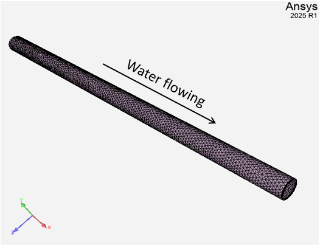
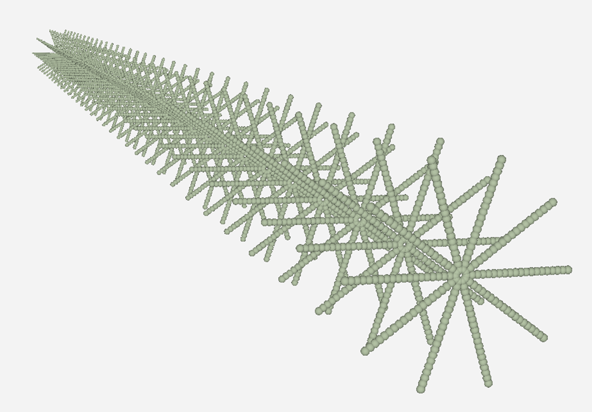
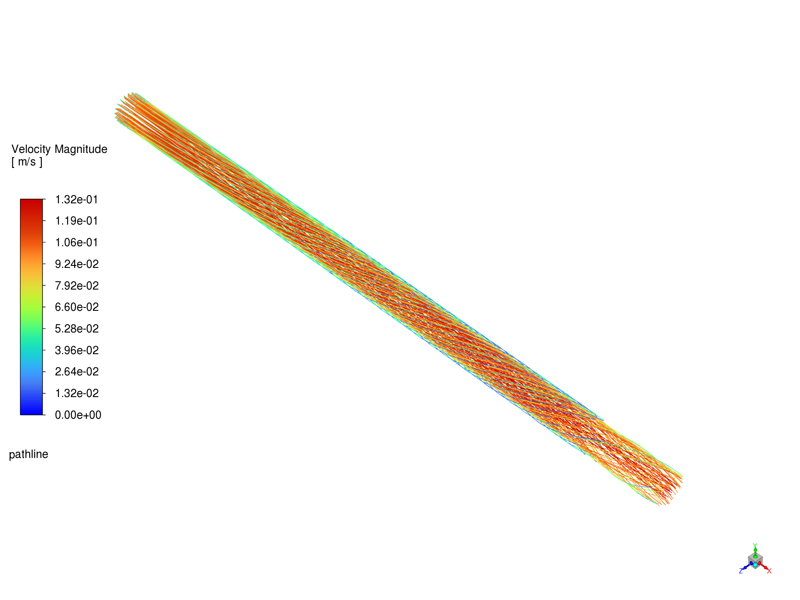

Note
Go to the end to download the full example code.
Fluid swirl#
This example illustrates a one-way data transfer from a SCDT file to Fluent, using System Coupling. Fluent solves a simple steady fluid flow problem, where the flow is affected by the momentum sources defined in the SCDT file.
Problem description
Fluid flow problem consists of the water flowing through the pipe.
{kind=link}

The SCDT file will be generated that consists of a cloud of points overlapping the fluid domain. At each point, the force density value is defined, with force acting along the flow cross-section, always in a counter-clockwise direction (if looking from the inlet to the outlet).
System Coupling is used to map the data from the cloud of points defined in the SCDT file onto Fluent mesh. The force values are then transferred into Fluent and Fluent solves the resulting fluid flow problem, where the fluid is influenced by the provided forces. As a result, the swirl is induced in the fluid flow.
# Tags: SCDT, Fluent, steady
Import modules, download files, launch products#
Setting up this example consists of performing imports, downloading the input file, and launching the required products.
Perform required imports#
Import the ansys-systemcoupling-core package and other required packages.
import math
import ansys.fluent.core as pyfluent
import ansys.systemcoupling.core as pysystemcoupling
from ansys.systemcoupling.core import examples
Download input files#
Download the case file for Fluent and the FMU file.
fluent_cas_file = examples.download_file(
"water_pipe_flow.cas.h5", "pysystem-coupling/fluid-swirl"
)
Launch products#
Launch a remote Fluent and System Coupling instances and return client objects that allows you to interact with these products via an API exposed into the current Python environment.
Note
Fluent version greater than 24.1 is required.
To specify Fluent version explicitly when launching Fluent,
use product_version argument to the launch_fluent
function, for example pyfluent.launch_fluent(product_version="24.2.0")
fluent = pyfluent.launch_fluent(start_transcript=True, processor_count=4)
syc = pysystemcoupling.launch()
/opt/hostedtoolcache/Python/3.13.14/x64/lib/python3.13/site-packages/ansys/fluent/core/fluent_connection.py:340: InsecureGrpcWarning: The Fluent session will be connected in insecure gRPC mode. This mode is not recommended. For more details on the implications and usage of insecure mode, refer to the Fluent documentation.
warnings.warn(
/opt/hostedtoolcache/Python/3.13.14/x64/lib/python3.13/site-packages/ansys/tools/common/cyberchannel.py:201: UserWarning: Starting gRPC client without TLS on 127.0.0.1:41707. This is INSECURE. Consider using a secure connection.
warn(f"Starting gRPC client without TLS on {target}. This is INSECURE. Consider using a secure connection.")
/opt/hostedtoolcache/Python/3.13.14/x64/lib/python3.13/site-packages/ansys/tools/common/cyberchannel.py:201: UserWarning: Starting gRPC client without TLS on 127.0.0.1:35663. This is INSECURE. Consider using a secure connection.
warn(f"Starting gRPC client without TLS on {target}. This is INSECURE. Consider using a secure connection.")
Setup#
The setup consists of setting up the the fluids analysis, generating the SCDT file, and setting up the coupled analysis.
Set up the fluid analysis#
Read the pre-created case file.
fluent.settings.file.read(file_type="case", file_name=fluent_cas_file)
Fast-loading "/ansys_inc/v261/fluent/fluent26.1.0/addons/afd/lib/hdfio.bin"
Done.
Reading from 9b1e4a90b426:"/home/container/workdir/water_pipe_flow.cas.h5" in NODE0 mode ...
Reading mesh ...
48575 cells, 1 cell zone ...
48575 mixed cells, zone id: 2
116126 faces, 4 face zones ...
109564 mixed interior faces, zone id: 1
6278 triangular wall faces, zone id: 5
142 mixed velocity-inlet faces, zone id: 6
142 mixed pressure-outlet faces, zone id: 7
20404 nodes, 1 node zone ...
Done.
Building...
mesh
distributing mesh
parts....,
faces....,
nodes....,
cells....,
bandwidth reduction using Reverse Cuthill-McKee: 5885/214 = 27.5
materials,
interface,
domains,
mixture
zones,
out
wall
interior-tube_solid
in
tube_solid
parallel,
Done.
Generate the SCDT file#
The following script generates a simple comma-separated file with points defined along the fluid domain. Six columns of data will be written: x, y, z coordinate values, followed by x-, y-, and z-components of the force density field. The number of points can be adjusted by naxial, ncirc, and nrad parameter values. The magnitude of the force (defined in N/m^3) can be adjusted by force_mag parameter value.
def create_source_file(file_name):
force_mag = 5.0
naxial = 33
ncirc = 10
nrad = 20
radius = 0.025
with open(file_name, "w") as f:
for xi in range(naxial):
x = (1.0 - 0.0) * xi / (naxial - 1)
for ti in range(ncirc):
theta = 2.0 * math.pi * ti / ncirc
for ri in range(nrad):
r = radius * (ri + 1) / nrad
z = r * math.cos(theta)
y = r * math.sin(theta)
fx = 0.0
fy = force_mag * math.sin(theta + 0.5 * math.pi)
fz = force_mag * math.cos(theta + 0.5 * math.pi)
f.write(f"{x}, {y}, {z}, {fx}, {fy}, {fz}\n")
src_file_base_name = "source"
src_file_name = f"{src_file_base_name}.scdt"
create_source_file(src_file_name)
{kind=link}

Set up the coupled analysis#
System Coupling setup involves adding the SCDT file and Fluent solver session as participants, adding coupled interfaces and data transfers, and setting other coupled analysis properties.
Add participants
source_name = syc.setup.add_participant(input_file=src_file_name)
fluid_name = syc.setup.add_participant(participant_session=fluent)
Feature already enabled.
Add a coupling interface and data transfers#
# Add a coupling interface for SCDT file -> Fluent
interface_name = syc.setup.add_interface(
side_one_participant=source_name,
side_one_regions=[src_file_base_name],
side_two_participant=fluid_name,
side_two_regions=["tube_solid"],
)
# Add force data transfer.
# Use System Coupling expression to combine force field
# components in the SCDT file into a vector.
# System Coupling will automatically convert force density
# values on the source (defined in [N/m^3]) to force
# values on the target (defined in [N]).
syc.setup.add_data_transfer(
interface=interface_name,
target_side="Two",
target_variable="lorentz-force",
value="vector(Variable1 * 1.0 [N], Variable2 * 1.0 [N], Variable3 * 1.0 [N])",
)
'lorentz-force'
Solution#
syc.solution.solve()
Successfully connected to System Coupling
Initialize using the hybrid initialization method.
Checking case topology...
-This case has both inlets & outlets
-Pressure information is not available at the boundaries.
Case will be initialized with constant pressure
iter scalar-0
1 1.000000e+00
2 3.723864e-04
3 5.018576e-05
4 1.453430e-05
5 6.488364e-05
6 9.772111e-06
7 1.458092e-05
8 3.472076e-06
9 3.392149e-05
10 4.737182e-06
Hybrid initialization is done.
during Hybrid Initialization.
NOTE: System Coupling analysis settings will override Fluent calculation settings
Total loss on zone 2 is 0.00e+00 (watt)
Force Sumx on zone 2 is 0.00e+00 (newton)
Force Sumy on zone 2 is 0.00e+00 (newton)
Force Sumz on zone 2 is 0.00e+00 (newton)
COUPLING STEP = 1 COUPLING ITERATION = 1
iter continuity x-velocity y-velocity z-velocity energy k omega time/iter
1 1.0000e+00 1.3645e-03 4.1911e-03 4.2149e-03 9.4436e-17 4.5149e-01 9.9571e-01 0:00:25 199
2 3.6737e-01 1.4453e-03 2.2860e-03 2.2996e-03 1.4126e-16 1.0928e-01 1.0673e-01 0:00:26 198
3 1.8510e-01 1.3367e-03 1.1793e-03 1.1858e-03 1.5230e-16 7.9191e-02 6.5827e-02 0:00:26 197
4 1.8358e-01 1.1931e-03 6.0675e-04 6.1069e-04 1.5492e-16 6.0262e-02 3.2896e-02 0:00:25 196
5 1.5209e-01 1.0800e-03 3.1590e-04 3.1846e-04 1.5359e-16 5.1316e-02 9.7956e-03 0:00:25 195
6 1.2111e-01 9.7166e-04 1.6851e-04 1.7063e-04 1.5456e-16 4.5504e-02 7.6648e-03 0:00:25 194
7 9.5275e-02 8.6136e-04 1.0642e-04 1.0838e-04 1.5407e-16 3.9397e-02 1.1723e-02 0:00:25 193
8 7.5063e-02 7.5717e-04 7.5111e-05 7.6179e-05 1.5617e-16 3.3764e-02 1.2701e-02 0:00:24 192
9 5.9587e-02 6.5883e-04 4.7534e-05 4.8334e-05 1.5385e-16 2.9388e-02 1.2011e-02 0:00:25 191
10 4.7091e-02 5.5845e-04 3.1170e-05 3.1608e-05 1.5430e-16 2.6185e-02 1.0506e-02 0:00:26 190
11 3.5200e-02 4.4126e-04 2.5621e-05 2.5760e-05 1.5497e-16 2.2326e-02 8.9037e-03 0:00:27 189
iter continuity x-velocity y-velocity z-velocity energy k omega time/iter
12 2.8222e-02 3.5379e-04 2.2316e-05 2.2352e-05 1.5547e-16 1.8904e-02 7.5121e-03 0:00:27 188
13 2.5706e-02 3.0061e-04 1.8675e-05 1.8805e-05 1.5639e-16 1.6224e-02 6.2069e-03 0:00:27 187
14 2.5158e-02 2.6042e-04 1.6240e-05 1.6389e-05 1.5467e-16 1.3982e-02 5.0959e-03 0:00:27 186
15 2.5023e-02 2.3093e-04 1.4013e-05 1.4159e-05 1.5372e-16 1.2115e-02 4.3281e-03 0:00:27 185
16 2.4790e-02 2.0903e-04 1.2409e-05 1.2526e-05 1.5286e-16 1.0533e-02 3.9334e-03 0:00:27 184
17 2.4197e-02 1.9411e-04 1.1053e-05 1.1127e-05 1.5222e-16 9.2059e-03 3.7498e-03 0:00:26 183
18 2.3439e-02 1.8267e-04 1.0198e-05 1.0308e-05 1.5278e-16 8.0870e-03 3.5424e-03 0:00:26 182
19 2.2352e-02 1.7397e-04 9.5692e-06 9.7209e-06 1.5180e-16 7.2005e-03 3.3093e-03 0:00:26 181
20 2.1140e-02 1.6667e-04 9.1387e-06 9.3248e-06 1.5305e-16 6.4824e-03 3.0593e-03 0:00:26 180
21 1.9839e-02 1.6016e-04 8.7062e-06 8.9227e-06 1.5379e-16 5.8671e-03 2.8072e-03 0:00:26 179
22 1.8526e-02 1.5408e-04 8.2893e-06 8.4928e-06 1.5485e-16 5.3264e-03 2.5594e-03 0:00:25 178
iter continuity x-velocity y-velocity z-velocity energy k omega time/iter
23 1.7245e-02 1.4818e-04 7.8842e-06 8.0623e-06 1.5320e-16 4.8622e-03 2.3480e-03 0:00:25 177
24 1.6036e-02 1.4250e-04 7.4660e-06 7.6131e-06 1.5444e-16 4.4695e-03 2.1969e-03 0:00:25 176
25 1.4953e-02 1.3736e-04 6.9762e-06 7.0953e-06 1.5559e-16 4.1325e-03 2.0563e-03 0:00:41 175
26 1.3932e-02 1.3276e-04 6.5113e-06 6.5904e-06 1.5416e-16 3.8424e-03 1.9159e-03 0:00:37 174
27 1.2971e-02 1.2867e-04 6.0731e-06 6.1152e-06 1.5602e-16 3.5906e-03 1.7812e-03 0:00:35 173
28 1.2090e-02 1.2469e-04 5.6763e-06 5.6993e-06 1.5545e-16 3.3692e-03 1.6532e-03 0:00:33 172
29 1.1282e-02 1.2065e-04 5.3216e-06 5.3565e-06 1.5563e-16 3.1836e-03 1.5341e-03 0:00:31 171
30 1.0547e-02 1.1654e-04 5.0272e-06 5.0738e-06 1.5514e-16 3.0301e-03 1.4271e-03 0:00:29 170
31 9.8966e-03 1.1248e-04 4.7837e-06 4.8287e-06 1.5374e-16 2.8890e-03 1.3310e-03 0:00:28 169
32 9.3047e-03 1.0846e-04 4.5872e-06 4.6403e-06 1.5417e-16 2.7523e-03 1.2467e-03 0:00:27 168
33 8.7829e-03 1.0457e-04 4.4328e-06 4.4878e-06 1.5515e-16 2.6189e-03 1.1724e-03 0:00:26 167
iter continuity x-velocity y-velocity z-velocity energy k omega time/iter
34 8.3189e-03 1.0073e-04 4.2989e-06 4.3399e-06 1.5464e-16 2.4892e-03 1.1050e-03 0:00:26 166
35 7.9072e-03 9.6887e-05 4.1791e-06 4.1934e-06 1.5503e-16 2.3634e-03 1.0425e-03 0:00:25 165
36 7.5430e-03 9.3013e-05 4.0619e-06 4.0711e-06 1.5410e-16 2.2415e-03 9.7059e-04 0:00:24 164
37 7.1149e-03 8.8730e-05 3.9650e-06 3.9646e-06 1.5239e-16 2.1226e-03 9.1052e-04 0:00:24 163
38 6.7641e-03 8.4527e-05 3.8578e-06 3.8594e-06 1.5198e-16 2.0059e-03 8.5443e-04 0:00:23 162
39 6.4503e-03 8.0378e-05 3.7466e-06 3.7572e-06 1.5492e-16 1.8925e-03 8.0058e-04 0:00:23 161
40 6.1552e-03 7.6303e-05 3.6328e-06 3.6549e-06 1.5278e-16 1.7822e-03 7.4841e-04 0:00:22 160
41 5.8732e-03 7.2333e-05 3.5267e-06 3.5534e-06 1.5453e-16 1.6750e-03 6.9731e-04 0:00:22 159
42 5.5968e-03 6.8422e-05 3.4376e-06 3.4520e-06 1.5528e-16 1.5711e-03 6.4755e-04 0:00:22 158
43 5.3282e-03 6.4579e-05 3.3344e-06 3.3559e-06 1.5360e-16 1.4705e-03 5.9978e-04 0:00:21 157
44 5.0585e-03 6.0847e-05 3.2264e-06 3.2549e-06 1.5223e-16 1.3731e-03 5.5461e-04 0:00:21 156
iter continuity x-velocity y-velocity z-velocity energy k omega time/iter
45 4.7868e-03 5.7224e-05 3.1240e-06 3.1415e-06 1.5290e-16 1.2789e-03 5.1231e-04 0:00:21 155
46 4.5193e-03 5.3709e-05 3.0259e-06 3.0189e-06 1.5350e-16 1.1882e-03 4.7362e-04 0:00:21 154
47 4.2562e-03 5.0337e-05 2.9192e-06 2.8959e-06 1.5216e-16 1.1018e-03 4.3765e-04 0:00:20 153
48 3.9996e-03 4.7089e-05 2.8148e-06 2.7874e-06 1.5198e-16 1.0200e-03 4.0374e-04 0:00:20 152
49 3.7514e-03 4.3995e-05 2.6964e-06 2.6803e-06 1.5061e-16 9.4267e-04 3.7224e-04 0:00:20 151
50 3.5118e-03 4.1031e-05 2.5791e-06 2.5814e-06 1.4958e-16 8.6987e-04 3.4270e-04 0:00:20 150
51 3.2846e-03 3.8205e-05 2.4641e-06 2.4884e-06 1.5122e-16 8.0163e-04 3.1497e-04 0:00:20 149
52 3.0701e-03 3.5534e-05 2.3555e-06 2.3912e-06 1.5051e-16 7.3773e-04 2.8912e-04 0:00:20 148
53 2.8660e-03 3.3005e-05 2.2554e-06 2.2979e-06 1.4939e-16 6.7809e-04 2.6487e-04 0:00:19 147
54 2.6754e-03 3.0620e-05 2.1647e-06 2.2036e-06 1.5091e-16 6.2262e-04 2.4241e-04 0:00:19 146
55 2.4967e-03 2.8376e-05 2.0821e-06 2.1201e-06 1.5021e-16 5.7103e-04 2.2167e-04 0:00:19 145
iter continuity x-velocity y-velocity z-velocity energy k omega time/iter
56 2.3312e-03 2.6294e-05 1.9978e-06 2.0359e-06 1.5157e-16 5.2303e-04 2.0278e-04 0:00:19 144
57 2.1769e-03 2.4370e-05 1.9083e-06 1.9484e-06 1.5070e-16 4.7848e-04 1.8572e-04 0:00:18 143
58 2.0337e-03 2.2592e-05 1.8225e-06 1.8626e-06 1.5266e-16 4.3732e-04 1.7022e-04 0:00:18 142
59 1.9009e-03 2.0947e-05 1.7392e-06 1.7738e-06 1.5194e-16 3.9928e-04 1.5611e-04 0:00:18 141
60 1.7763e-03 1.9416e-05 1.6567e-06 1.6879e-06 1.5441e-16 3.6414e-04 1.4323e-04 0:00:18 140
61 1.6604e-03 1.8008e-05 1.5768e-06 1.6053e-06 1.5345e-16 3.3203e-04 1.3145e-04 0:00:18 139
62 1.5534e-03 1.6708e-05 1.4949e-06 1.5283e-06 1.5191e-16 3.0280e-04 1.2069e-04 0:00:18 138
63 1.4532e-03 1.5511e-05 1.4184e-06 1.4546e-06 1.5193e-16 2.7623e-04 1.1080e-04 0:00:18 137
64 1.3583e-03 1.4411e-05 1.3450e-06 1.3854e-06 1.5074e-16 2.5208e-04 1.0173e-04 0:00:18 136
65 1.2682e-03 1.3389e-05 1.2813e-06 1.3225e-06 1.5002e-16 2.3012e-04 9.3399e-05 0:00:18 135
66 1.1841e-03 1.2442e-05 1.2182e-06 1.2573e-06 1.5037e-16 2.1013e-04 8.5769e-05 0:00:18 134
iter continuity x-velocity y-velocity z-velocity energy k omega time/iter
67 1.1064e-03 1.1566e-05 1.1582e-06 1.1924e-06 1.5175e-16 1.9196e-04 7.8772e-05 0:00:17 133
68 1.0339e-03 1.0756e-05 1.0983e-06 1.1267e-06 1.5016e-16 1.7544e-04 7.2343e-05 0:00:17 132
69 9.6633e-04 1.0007e-05 1.0390e-06 1.0647e-06 1.5081e-16 1.6035e-04 6.6431e-05 0:00:17 131
! 69 solution is converged
Writing to 9b1e4a90b426:"/home/container/workdir/.//water_pipe_flow-0.cas.h5" in NODE0 mode and compression level 1 ...
Grouping cells for Laplace smoothing ...
48575 cells, 1 zone ...
116126 faces, 4 zones ...
20404 nodes, 1 zone ...
Done.
Done.
Additional data file quantities are not supported when writing in the default CFF format (.dat.h5 files).
Writing to 9b1e4a90b426:"/home/container/workdir/.//water_pipe_flow-0-00069.dat.h5" in NODE0 mode and compression level 1 ...
Writing results.
Done.
Writing to 9b1e4a90b426:"/home/container/workdir/.//water_pipe_flow-0.cas.h5" in NODE0 mode and compression level 1 ...
Grouping cells for Laplace smoothing ...
48575 cells, 1 zone ...
116126 faces, 4 zones ...
20404 nodes, 1 zone ...
Done.
Done.
Additional data file quantities are not supported when writing in the default CFF format (.dat.h5 files).
Writing to 9b1e4a90b426:"/home/container/workdir/.//water_pipe_flow-0-00069.dat.h5" in NODE0 mode and compression level 1 ...
Writing results.
Done.
Post-processing#
Generate an image with fluid flow streamlines using PyFluent post-processing. Note how the force values defined in the SCDT file induce the swirl in the fluid flow.
if fluent.settings.results.graphics.picture.use_window_resolution.is_active():
fluent.settings.results.graphics.picture.use_window_resolution = False
fluent.settings.results.graphics.picture.x_resolution = 1920
fluent.settings.results.graphics.picture.y_resolution = 1440
fluent.settings.results.graphics.pathline["pathline"] = {}
pathline = fluent.settings.results.graphics.pathline["pathline"]
pathline.field = "velocity-magnitude"
pathline.release_from_surfaces = ["in"]
pathline.display()
fluent.settings.results.graphics.views.restore_view(view_name="isometric")
fluent.settings.results.graphics.views.auto_scale()
fluent.settings.results.graphics.picture.save_picture(
file_name="fluid_swirl_pathline.png"
)
number tracked = 142, escaped = 71, incomplete = 71
{kind=link}

Exit#
fluent.exit()
syc.exit()
Total running time of the script: (1 minutes 46.664 seconds)